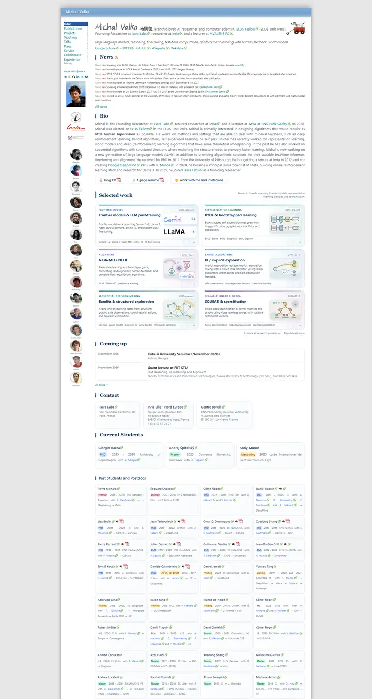

Michal Valko
紙の枠に収めた研究のコックピット。スチールブルーのタイトル帯、リンクと学生の顔が並ぶ破線のサイドバー、密な 9px のニュースの横で唸る色分けされた研究カードのグリッド。

表示されたページと照合済みです。
選んだ理由
代表作のカードグリッド、色分けされた学生タグ、肖像のレールを備えた、ダッシュボードのように密度の高いページです。珍しく、丁寧に作られています。
以下の説明と DESIGN.md 本文は英語です。コーディングエージェントが同じ一つの版を読めるよう、翻訳していません。
概要
カラーパレット
タイポグラフィ
system UI stack
Michal Valko, reinforcement learning, bandits
Abstract · Method · Results · BibTeX — 0123456789
Georgia
Michal Valko, reinforcement learning, bandits
Abstract · Method · Results · BibTeX — 0123456789
余白と形
ページの構成要素
ガイドライン
似たスタイル

Amir Bar
Imperial ブルーの端正な教員案内。白地に Inter、ピル型のリンク、手を伸ばすと数ピクセル浮き上がる論文カード。

Christoph Feichtenhofer
学会ホールの横断幕のような Facebook ブルーの帯に続き、赤字の論文名、緑の掲載先、両端揃えのグレーの要旨が長い台帳のように並ぶ。

David Novotny
夕暮れの港と静かな閲覧室。ティールからミッドナイトへの固定パネルに右揃えの連絡先、白地には柔らかなグレーの文字とタンジェリン色のリンク。

Jaeyeon Kim
細い Roboto で組んだ静かなゼミの配布資料。声を張るのは赤くハイライトされたひとつの問いとミント色のタグの列だけ。

Jonathan Shafer
基調講演のオープニングスライド。全面に広がるスレートブルーの面ひとつ、リングで囲んだ肖像、108px の名前、会場の後ろからでも読める中央揃えの段落。

Junyang Lin
温かみのある紙に綴じた、静かな研究者のフォリオ。Garamond の見出し、ティールの小さなラベル、細い罫線で区切られた項目。